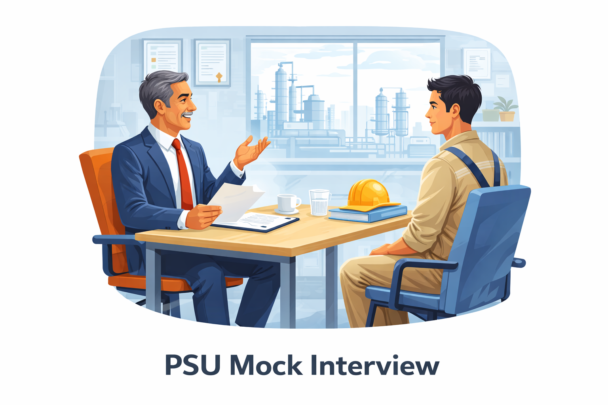
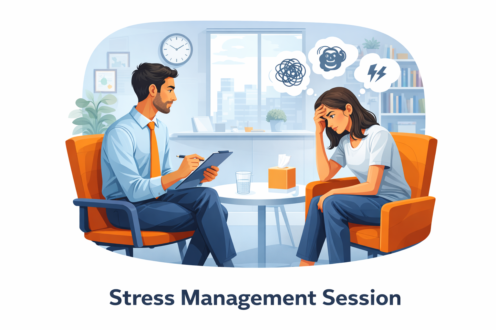

PanelPrep Programs

MBA Mock Interview
Experience a realistic MBA admission interview simulation.
Our MBA Mock Interview is designed to help candidates prepare for the Personal Interview (PI) stage of MBA admissions through a structured and realistic interview experience.
The session focuses on evaluating your communication skills, clarity of thought, confidence, and overall personality.
What you will get
- 30–40 minute realistic interview simulation
- Questions based on your profile, academics, and experiences
- Practice for HR questions, opinion-based questions, and situation-based questions
- Detailed feedback on communication, structure of answers, and confidence
- Suggestions to improve your interview approach and answer framing
Ideal for
Students preparing for MBA admission interviews and selection processes.

Campus Placement Mock Interview (Chemical Engineering)
Prepare for campus placement interviews with structured practice.
This mock interview is designed for Chemical Engineering students preparing for campus placements in core industries such as Oil & Gas, Petrochemicals, Process Industry, and Manufacturing.
The session focuses on assessing your technical fundamentals, problem-solving ability, and interview communication.
What you will get
- 20–30 minute simulated campus interview
- Practice for technical and HR interview questions
- Feedback on technical clarity, explanation skills, and confidence
- Guidance on improving structured answers during interviews
Ideal for
Chemical Engineering students preparing for core company campus placements.

GD / GE Session
Practice group-based evaluation rounds with guided feedback.
Group Discussion (GD) and Group Exercise (GE) sessions help candidates develop the ability to communicate ideas clearly, think logically, and collaborate in a group environment.
This session simulates a structured discussion environment to help participants practice speaking confidently and presenting their viewpoints effectively.
What you will get
- Live GD/GE practice session
- Topic-based group discussion
- Feedback on communication, participation, and clarity of arguments
- Tips to improve structure, engagement, and impact during discussions
Skills evaluated
- Communication and articulation
- Logical thinking
- Listening ability
- Leadership and teamwork

PSU Mock Interview (Chemical Engineering)
Prepare for technical interviews conducted in PSU recruitment processes.
This mock interview focuses on technical concepts and problem-solving from core chemical engineering subjects, helping candidates strengthen their understanding and presentation of technical knowledge.
What you will get
- Technical interview simulation
- Concept-based and problem-solving questions
- Feedback on technical explanation, clarity, and confidence
- Guidance on presenting technical answers in a structured manner
Ideal for
Chemical Engineering candidates preparing for PSU recruitment interviews.

Stress Management Session
Improve focus, emotional balance, and mental clarity.
The Stress Management Session provides a supportive space to discuss stress, pressure, and personal challenges while learning practical techniques to improve mental well-being and emotional control.
The session focuses on helping individuals develop better coping strategies, improve focus, and manage pressure in academics, career preparation, and everyday life.
What you will learn
- Understanding common causes of stress and pressure
- Techniques to manage anxiety and overthinking
- Methods to improve focus and emotional balance
- Practical strategies for handling challenging situations
This session is intended for general stress discussion and personal support. It is not a medical or psychological treatment program. If someone is experiencing serious mental health concerns such as depression, it is strongly recommended to consult a qualified medical or mental health professional.